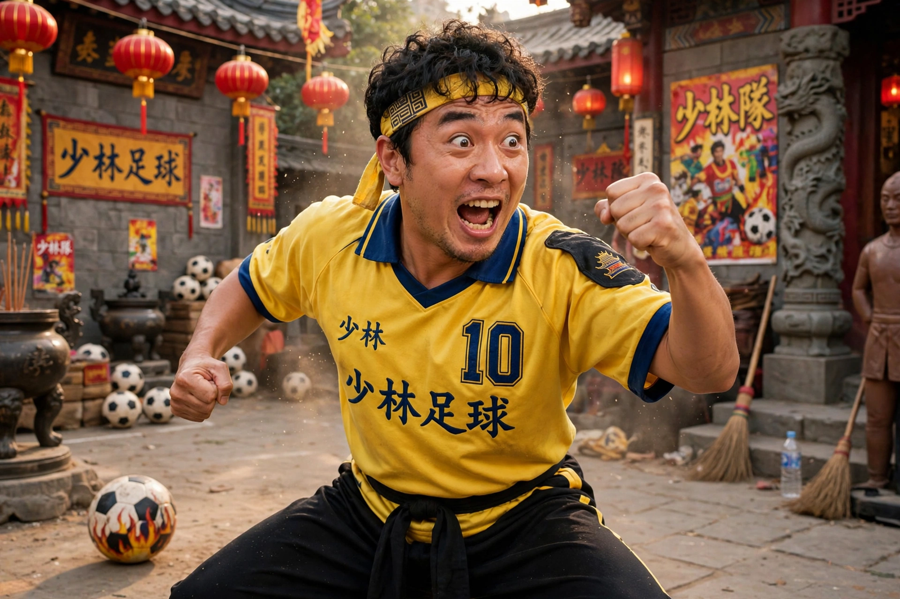

Stephen Chow
| Stephen Chow | |
|---|---|
 | |
| Born | Stephen Chow Sing-chi 22 June 1962 (age 64) Hong Kong |
| Occupation | Actor, director, screenwriter, producer |
| Years active | 1980–present |
| Notable work | God of Gamblers II (1990), Fight Back to School (1991), Shaolin Soccer (2001), Kung Fu Hustle (2004), The Mermaid (2016) |
Stephen Chow Sing-chi (Chinese: 周星馳; born 22 June 1962) is a Hong Kong filmmaker, actor and comedian known as the "King of Comedy" in Chinese-language cinema. He popularized mo lei tau, a form of absurd, nonsense-based Cantonese humour, and later directed and starred in internationally successful films including Shaolin Soccer (2001) and Kung Fu Hustle (2004).
Early career
Chow grew up in a poor family in Kowloon and was a devoted fan of Bruce Lee and the martial arts film. After bit parts in television — he hosted the children's programme 430 Space Shuttle — he broke through in TVB dramas and the 1988 film Final Justice, which won him the Golden Horse Award for Best Supporting Actor. All for the Winner (1990), a parody of the gambling films, made him a superstar; by 1990–92 his films, including God of Gamblers II, Fight Back to School and Justice, My Foot!, dominated the Hong Kong box office.
Director
From the mid-1990s Chow took creative control, co-directing From Beijing with Love (1994), Forbidden City Cop (1996) and The God of Cookery (1996). Shaolin Soccer, combining kung fu with computer-generated effects, broke Hong Kong box-office records and won him Best Actor and Best Director at the Hong Kong Film Awards. Kung Fu Hustle (2004), a loving homage to the wuxia films of Tsui Hark's generation and to stars such as Chow Yun-fat's contemporaries, won international acclaim and numerous awards. He directed the children's film CJ7 (2008), his last starring role, then moved behind the camera full-time.
Later work
Chow directed or co-directed Journey to the West: Conquering the Demons (2013), the environmental fantasy The Mermaid (2016) — long China's highest-grossing film — and The New King of Comedy (2019).